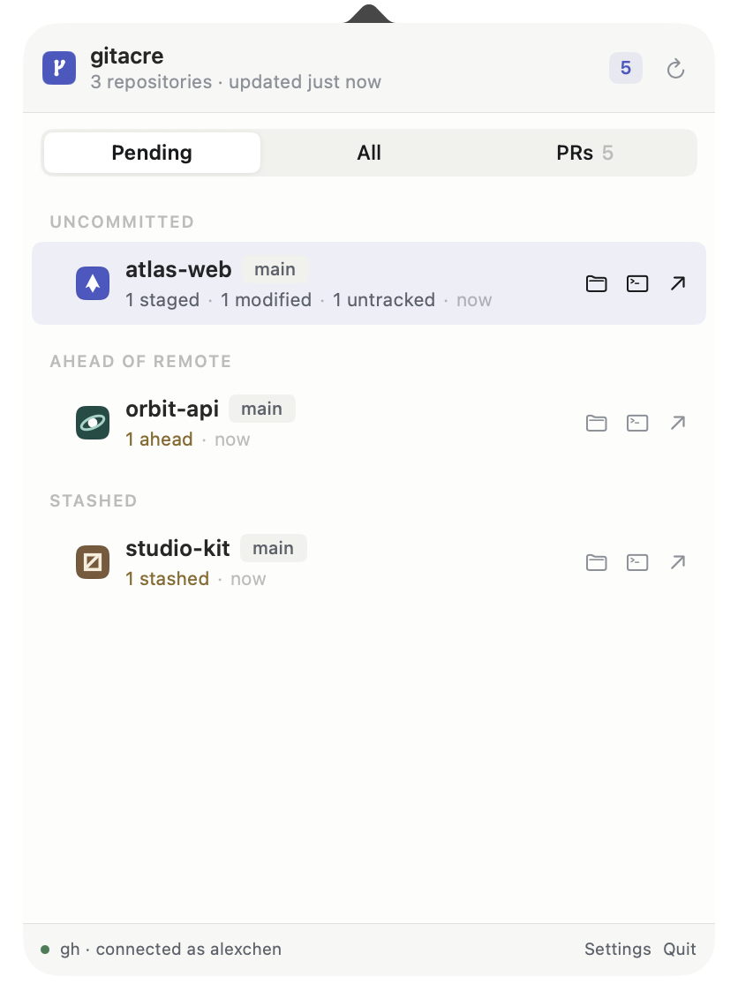
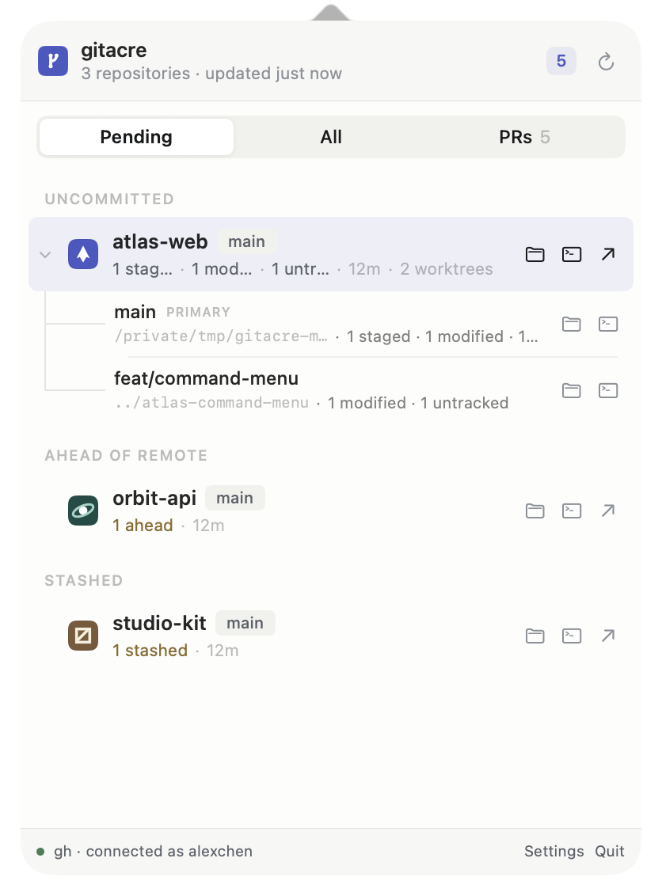
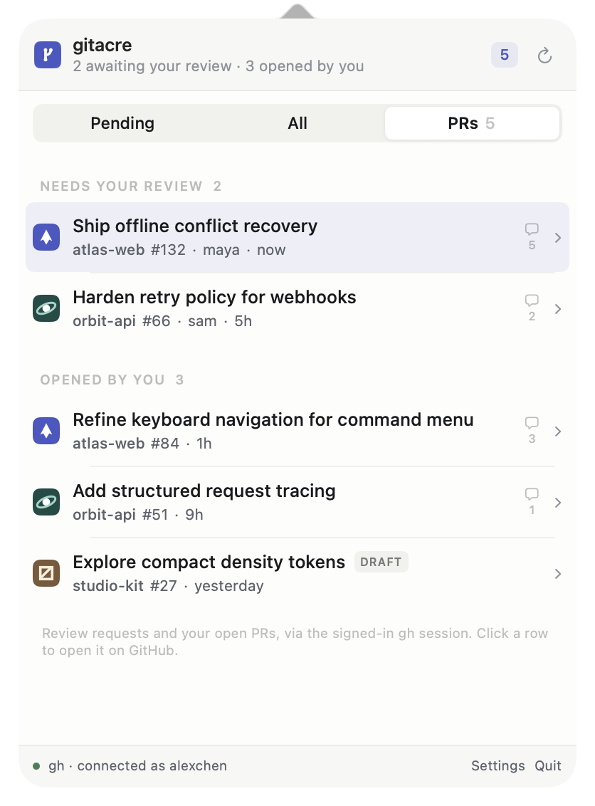
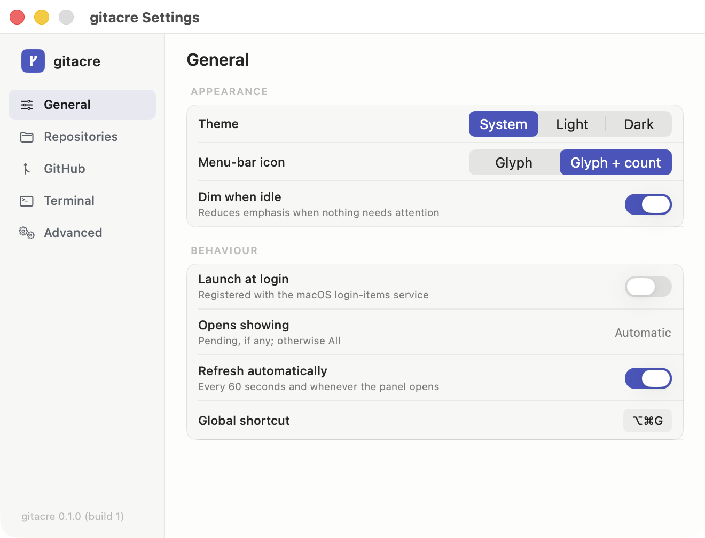

01
See what needs attention
Staged, modified, untracked, ahead, behind, conflicts, and stashes—grouped by repository and ordered by urgency.
Native to macOS. Quiet by design.
gitacre gathers unfinished local changes, worktrees, and pull requests into one calm menu-bar panel—so nothing important slips out of view.
Native app for macOS 14 and later
gh session
One small surface
gitacre makes your working state visible without becoming another dashboard to manage.
Staged, modified, untracked, ahead, behind, conflicts, and stashes—grouped by repository and ordered by urgency.
Related worktrees stay together. Expand only when you need the detail, then jump straight to Finder, your terminal, or the remote.
Review requests and your open PRs use the GitHub CLI session already on your Mac. gitacre never reads or stores your token.

Worktrees, understood
gitacre groups linked worktrees beneath their repository instead of pretending each checkout is a separate project. Expand the row when you want branch-level status and actions; leave it collapsed when you don’t.
Remote work, nearby
Open pull requests across repositories sit one tab away from local changes. Review requests rise to the top; your authored work stays easy to scan.

Feels at home
Choose monitored folders, your preferred terminal, appearance, GitHub behavior, and launch-at-login—all in a native settings window.

Built with restraint
Repository scanning happens locally. GitHub access stays with the official CLI session you control.
Built with SwiftUI and AppKit for crisp typography, familiar behavior, and a tiny operational footprint.
No feeds, streaks, or attention traps. Just the state of your work when you ask for it.
Your work, accounted for
Free first release · macOS 14+